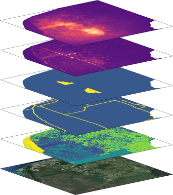

samc 
{kind=link}
Introduction
This is an R package that implements functions for working with absorbing Markov chains using theorems described in the book “Finite Markov Chains” by Kemeny and Snell. The design of this package is based on the implementation of these theorems in the framework described by Fletcher et al. in Toward a unified framework for connectivity that disentangles movement and mortality in space and time (Ecology Letters, 2019; DOI: 10.1111/ele.13333), which applies them to spatial ecology. This framework incorporates both resistance and absorption (or mortality) using spatial absorbing Markov chains to provide several short- and long-term predictions for metrics related to connectivity in landscapes. These metrics are listed in Table 1 of Fletcher et al. (2019), as well as the Overview vignette. Despite the ecological context of the package, these functions can be used in any application of absorbing Markov chains.
Installation
It is recommended that users install the samc package via CRAN, where it will be regularly kept up to date.
install.packages("samc")Citation
Marx, A.J., Wang, C., Sefair, J.A., Acevedo, M.A. and Fletcher, R.J., Jr. (2020), samc: an R package for connectivity modeling with spatial absorbing Markov chains. Ecography, 43: 518-527. doi:10.1111/ecog.04891
Version 2
Version 2 of the package officially removed support for various deprecated parameters in the samc() function. Deprecation warnings were provided starting in v1.4.0 of the package, along with message details and a backwards compatible implementation of the expected changes. Removing this backwards compatibility is a breaking change that will require some old code to be updated in order run on the latest version of the package. The changes needed are straightforward and mostly entail some reorganization of the input parameters for the samc() function. Some of the old functionality, primarily overriding memory safety limits, has been moved to the samc-class itself, and is no longer tied to the object creation. Redesigning the samc() function and removing backwards compatibility makes maintaining the package and adding new features later a substantially improved process; hopefully with only minor inconvenience to users.
Support
Please note that this section is for package specific queries. If you have questions or comments about the related published articles, contact the authors.
Have an error and can’t fix it?
If you have an error, make sure you are using the newest version of the package. Then, check the site’s Troubleshooting page, which is periodically updated with common errors that users encounter.
Not sure how to do something? Found a bug? Have a feature request? Still can’t solve your error? Want to show off your project?
We have a Github discussions page for anything and everything related to the package here: Github Discussions